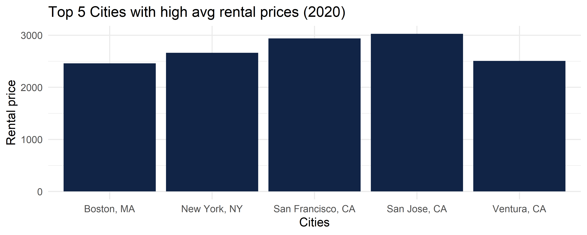
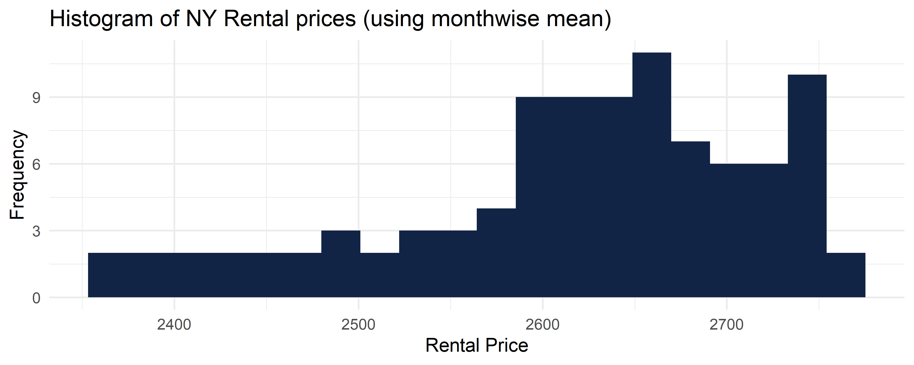
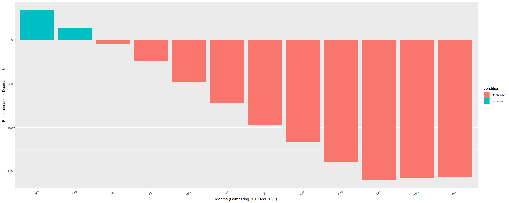
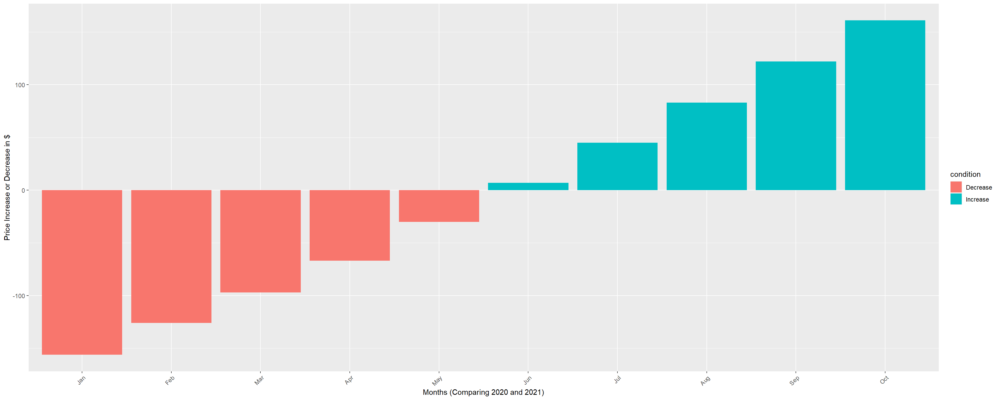
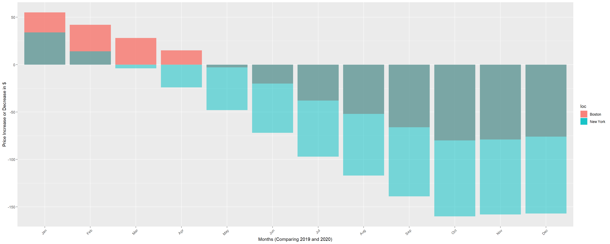
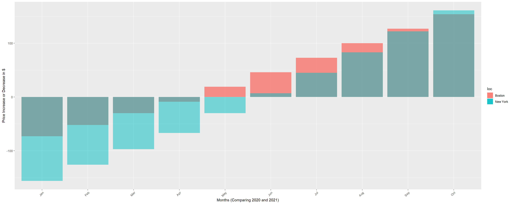

Chapter 5 Results
5.1 Top 5 Cities with high avg rental prices (2020)

5.2 Top 5 Cities with high avg rental prices (2021)
When both plots are being compared, we observe that the top 5 rental price of both the years have been the same city. While we observe only a marginal increase or decrease in Boston, New York, San Francisco, and San Jose, we observe a substantial increase in the rental price of the city Ventura, CA
5.3 Histogram of NY Rental prices
 The above graph depicts the spread of the NY Rental prices data. It is clear that most of the data lies between the price 2600 and 2750, which tells us that the NY rental market is not at all cheap, though there are few exeptions.
5.4 The change in NY Rental Prices for the same months (Comparing Year 2019 with 2020)

While the usual trend remains increasing as years increase, there are some strange results obtained when comparing the year 2019 and 2020. Comparing the change in price for the same month with its previous year, we observe that the rental price have substantially decreased. This trend has never been observed in any of the previous years. The cause of this impact to most likely due to covid19.But during the recovery stages of COVID19 (November, December), we could observe that the reduction in prices have started decreasing.
5.5 The change in NY Rental Prices for the same months (Comparing Year 2020 with 2021)

When compared to the year 2020, we see the rental prices have started increasing. While the pandemic has made a huge negative impact on rental prices in the year 2020, it is clearly visible that the prices are marching back to normal and the trend seems to be carried for every next month as well. So, New York is marching towards the pre-pandemic normal.
5.6 Comparing the impact of covid on rental pricing within top 5 cities (New York and Boston)


We observe that the due to covid, there has been a drop in rental pricing for Boston as is for New York. But in New York, there has been a tremendous decrease rapidly when compared to Boston. The decrease began for Boston during May 2020, while it started to decrease in New York by March 2020. And the decrease value for New York is almost more than twice than the drop at Boston. During the road to recovery,Boston’s rental price stated increasing by May 2021, while for New York it started by June 2021. Though New York took time to reach this point, now the rental price have increased beyond Boston during the month of October 2021. So, New York has almost reached back to it’s pre-covid situation.
5.7 NY Rental Price (2014 - 2021)
From the above graph, we can clearly see the drop of the rental prices in New York during the pandemic time. And it is also clear that it is again taking a correction and coping up with the old prices.
5.8 Pre-Pandemic Analysis($ Inc/Dec YoY for all the months):
When we compared the prices of New York apartment in 2018 and 2019, it is very clear that there has never been a fall in price for the same month in the consecutive year before the pandemic. And it is the pandemic that has caused the rental prices at New York to fall down during the year 2020. Also, the peak time during which the rental prices hike up is predominant during July (Fall) and the increase in prices within a year are less when it reaches winter (December).